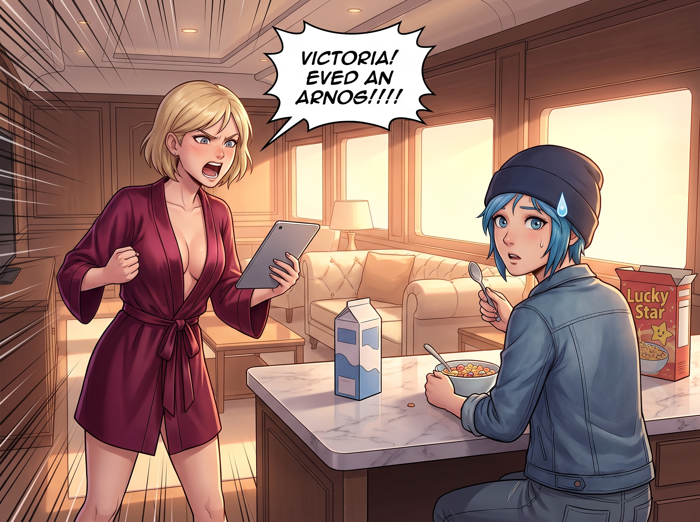
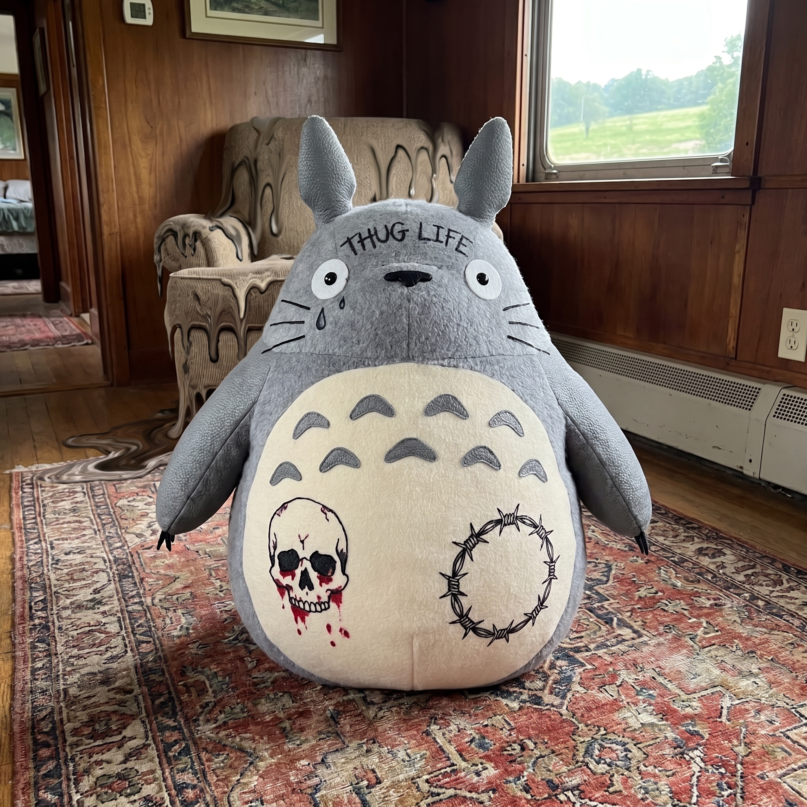
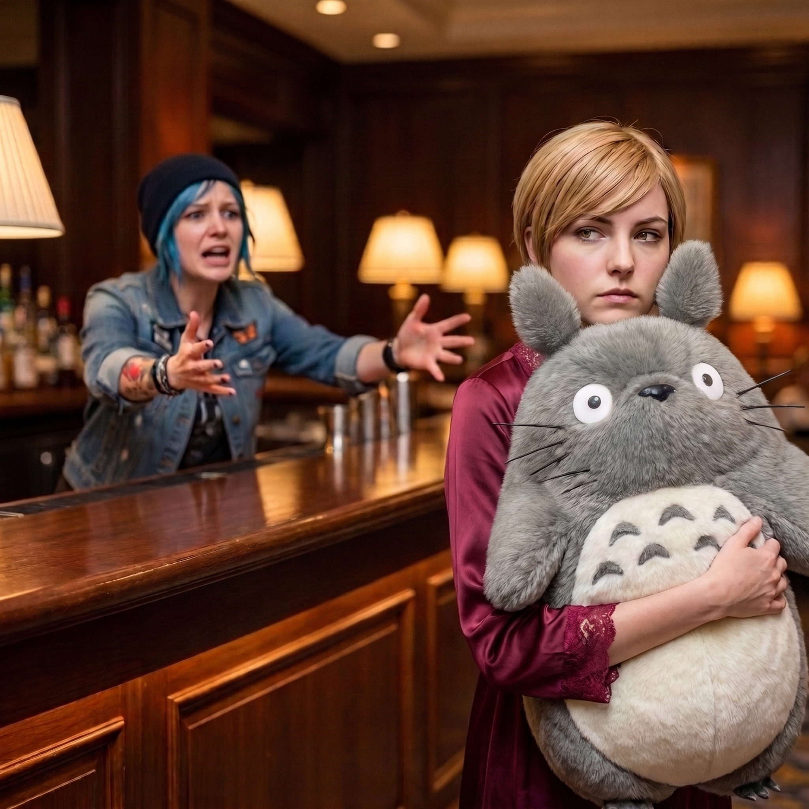

一拳打在棉花上



隔天清晨，二號車廂爆發出一聲足以震碎防彈玻璃的尖叫。
這聲尖叫沒有任何名媛的優雅，充滿了純粹的驚恐與震怒。幾秒鐘後，Victoria 連酒紅色的真絲睡袍都沒來得及繫緊，就光著腳像一陣黑色的颶風般衝進了起居廂，手裡死死攥著她的平板電腦。
「PRICE！我發誓，我的律師團隊今天下午就會把妳剝皮抽筋，讓妳下半輩子都在幫 Chase 財團洗廁所來償還債務！！」
正在中島吧台吃著幸運星麥片的 Chloe 差點被一口牛奶嗆死。她轉過身，滿臉無辜地咬著勺子：「早安啊大富婆，一大早火氣這麼大，是發現妳的銀行帳戶少了一個零嗎？」
一、暴徒生涯
Victoria 氣得渾身發抖，將平板狠狠拍在吧台上。
螢幕上是一張極其逼真的照片：那隻價值三千美金、由頂級小牛皮和純羊絨手工拼接的聯名款大龍貓，此刻正霸氣地坐在客廳的地毯上。但它的肚子上，被人用粗劣的黑色馬克筆畫滿了極具美式監獄風格的刺青——左邊是一個帶血的骷髏頭，右邊纏繞著一圈鐵絲網，龍貓圓滾滾的臉頰上甚至還被點了一顆黑幫專屬的淚滴刺青，額頭上歪歪扭扭地寫著四個大字：THUG LIFE。
「羊絨！那是無法清洗的純羊絨！」Victoria 的聲音都在劈岔，眼眶因為極度的痛心而微微發紅，「妳這隻缺乏教養的藍毛狒狒！把那個被妳毀容的玩偶給我交出來！」
坐在吧台另一邊、正在喝咖啡的 Max 默默推了推眼鏡，忍笑忍得肩膀瘋狂抽搐。
Chloe 則慢條斯理地嚥下嘴裡的麥片，雙手一攤：「交出來？我不知道妳在說什麼啊。我只是早起在沙發上撿到了妳的平板，看到妳的相冊裡有這張照片而已。難道不是妳自己半夜夢遊，為了追求廢土邊緣美學而親手給妳的胖老鼠紋的身嗎？」
「妳放屁！那是麥克筆的墨水！」Victoria 衝上去就想抓 Chloe 的衣領。
二、畸形爪子的破綻
「等等，Victoria，冷靜一下。」Max 終於看不下去了，她伸出一根手指，在螢幕上將那張刺青龍貓的照片放大，再放大，指著龍貓的爪子邊緣說，「妳仔細看看，這隻龍貓的爪子……是不是長得完全不對稱？真正的絨毛玩偶爪子只會車縫出三到四道固定的分趾線，不會長成這種奇形怪狀的畸形手掌。」
Victoria 愣住了。她湊近螢幕，視線穿過怒火，終於發現了不對勁。
不僅是那隻詭異的爪子，背景裡那張真皮沙發的紋理在邊緣處呈現出一種詭異的融化感，而那幾個 THUG LIFE 的字母，湊近了看，中間居然還混雜著幾個既不是英文字母、也不是任何已知文字的扭曲符號，在像素邊緣呈現出一種不符合物理光影的平滑過渡。
「這……這是……」名媛的大腦出現了短暫的卡頓。
「歡迎來到生成式 AI 的時代，Chase 夫人。」Chloe 終於忍不住爆發出震天動地的狂笑，拍著桌子樂不可支，「我昨晚只是拿 Max 拍的那張拍立得，掃描進電腦，然後用了幾個提示詞：給一隻昂貴的毛絨龍貓加上美式街頭黑幫刺青，寫實風格。成本零元，毀滅效果滿分！」
三、一拳打在棉花上
就在這時，通往溫室的門被輕輕推開了。
Kate 穿著一條碎花連衣裙，懷裡抱著那隻毫髮無損、純潔無瑕、肚子上甚至還帶著一絲洋甘菊香氣的巨大龍貓走了進來。
「大家早安！Victoria，昨晚客廳的窗戶有點漏風，我怕它被吹髒，就把它抱到我的房間裡和我們一起睡了。我還用軟毛刷幫它理了一下毛呢。」天使般溫柔的聲音，給這場鬧劇畫上了句號。
Victoria 呆呆地看著 Kate 懷裡那隻完美無瑕的龍貓，又看了看螢幕上的黑幫老大。
她積攢了整整一個早上的狂暴怒火、準備好的幾百萬美金訴訟威脅、以及那種心痛到無法呼吸的情緒，在這一瞬間全部失去了著力點。這就像是她已經拉滿了弓，射出了一支足以毀天滅地的核子箭，結果卻輕飄飄地射進了一團巨大、柔軟且充滿嘲諷意味的棉花裡。
這種拔劍四顧心茫然的吃鱉感，比真的被毀了玩偶還要讓名媛抓狂。
「妳……妳們……」Victoria 氣得咬牙切齒，一把從 Kate 懷裡奪回龍貓，死死抱在懷裡，臉色一陣青一陣白。
四、名媛的反擊
但老錢階級的基因絕對不允許她就這樣咽下這口氣。
Victoria 深吸了一口氣，瞬間收起了所有失態的表情。她冷靜地拿起平板，手指在螢幕上飛快地操作了幾下，然後轉過頭，給了 Chloe 一個極度優雅且充滿毀滅性的冷笑。
「很有創意，Price。既然妳這麼喜歡高科技，那我剛才順手登入了車廂的路由管理員後台，把基地的 Wi-Fi 密碼改成了一組由六十四個隨機生成的古法語單詞組成的亂碼。」
名媛抱著龍貓，轉身走向自己的房間，頭也不回地甩下最後的判決：「如果我沒記錯的話，妳今天上午在拍賣平台上還有幾場重要的限時拍賣要搶對吧？祝妳用微弱的訊號，順利搶到妳那些破紙板。Have a nice day。」
「Wait！大富婆！Victoria！有話好說！我錯了！」吧台後方瞬間傳來了藍領機械師絕望的哀嚎，伴隨著 Max 毫無同情心的無情快門聲。